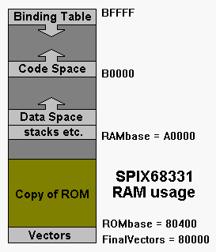

Coldfire/68K-based TOF implementation
This model is a 32-bit, subroutine threaded Forth with inlining and peephole optimization.
The 68331 SPIX demo board uses an 8-bit boot EPROM and contains 256K bytes of 16-bit RAM. At startup, the boot memory is copied to RAM for speed. The memory footprint isn't very big, occupying about 20K of ROM and less than 32K of RAM. RAM usage is shown in Figure 1.
Figure 1. RAM usage in a 68K/Coldfire TOF implementation.
|  |
The SPIX331's ROM is built by FLOADing DEMOCF.FF in the SPIX331 folder. It creates a ROM image that will run at 80400 but needs a little help booting up. The file BOOT.FF creates a relocatable little boot program that sets up the memory spaces and copies ROM to RAM. It saves an S-Record file suitable for programming into an EPROM or Flash memory.